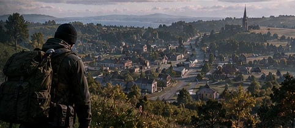
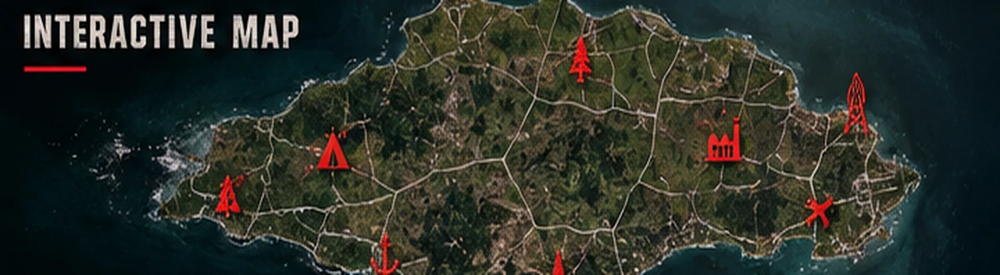
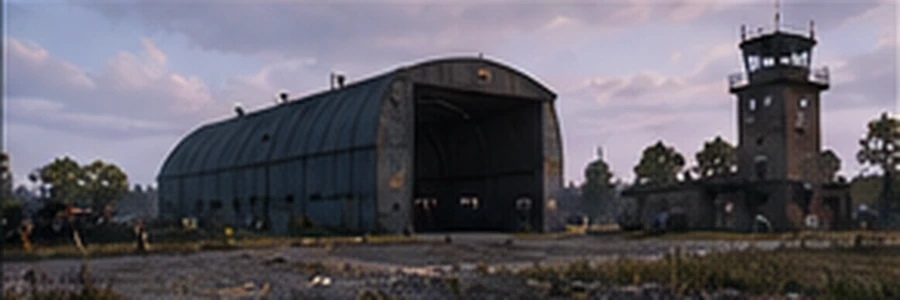
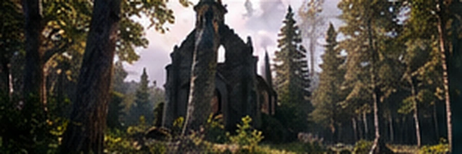
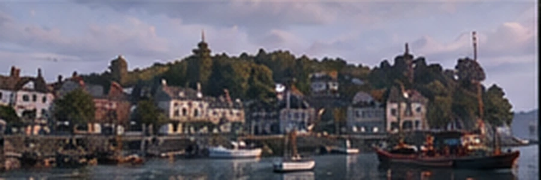
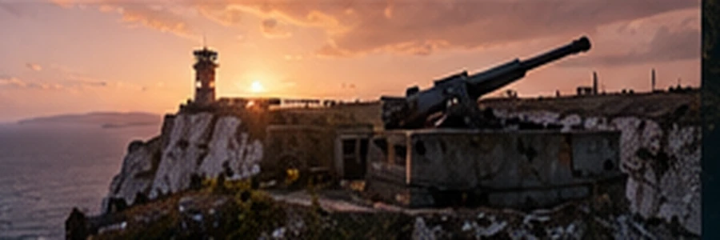

WESTERN EDGE
THE NEEDLES
Iconic chalk stacks, treacherous sea approaches and long-abandoned coastal positions.
51° NORTH / ISLE OF WIGHT / TRANSMISSION UNKNOWN
THE ISLAND REMEMBERS.
A familiar coastline. An unfamiliar silence. Explore a reimagined British island where every road leads somewhere — and some secrets were never meant to be found.
01 / THE ISLAND
Explore a handcrafted interpretation of the Isle of Wight: recognisable coastlines, chalk cliffs, British countryside, forgotten villages, fortified airfields and hidden wartime secrets.
Built around atmosphere, cooperation and long-form survival. No endless kill feed. No guided theme park. Just the island, its stories and the people who survive them.

02 / ISLAND INTELLIGENCE
Inspired by real Isle of Wight geography, then reshaped by catastrophe. Explore winding roads, hostile zones and coastline after coastline.

CONCEPT MAP / NOT A NAVIGATION CHART03 / PLACES TO DISCOVER
Landmarks old and new. Some are safe. Some are not. Every location has a story worth uncovering.
Iconic chalk stacks, treacherous sea approaches and long-abandoned coastal positions.

A militarised airfield guarding a secret nobody wanted getting off the island.

Woodlands, farmland, tucked-away villages and things hidden in plain sight.

A once-busy gateway to the mainland. Now every empty street has a history.

Deep inside the cliffs is a choice that could change the island itself.
04 / THE SIGNAL
Scattered evidence. Missing components. Ciphers that won't always be the same. A trail of discoveries that could take weeks to piece together — alone, or with friends.
At the Needles Battery, two possible futures await. The choices you make can leave their mark on the island until the next restart.
NO WAYPOINTS. NO HAND-HOLDING. NO GUARANTEED ANSWERS.05 / FIELD RECORDINGS
Atmospheric concept artwork representing the world we're building. In-game screenshots will replace these as development progresses.
06 / DEVELOPMENT TRANSMISSION
A living project, built piece by piece. These are qualitative milestones, not fabricated completion percentages.
Coastline, elevation, roads, cliff faces and satellite terrain are being refined.
ACTIVE DEVELOPMENTBritish villages, coastal facilities, military zones and environmental details.
IN PROGRESSCooperative investigation, variable puzzles and a world-changing final decision.
IN DESIGN07 / KEEP THE FREQUENCY OPEN
Wight Signal is still in development. Follow the project as we bring this haunting, familiar island to life.
Community and Workshop destinations will be activated once official URLs are available.